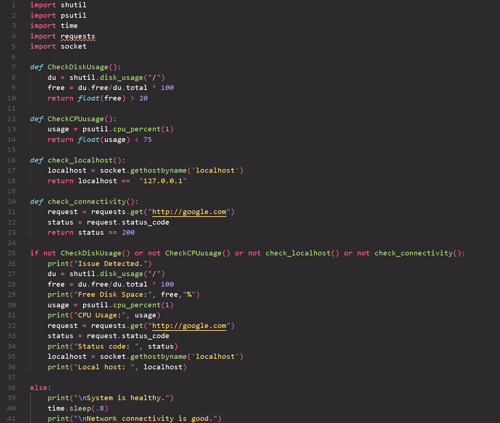

Featuring:
• Python scripts designed to simulate the functionality of malicious tools, including
Ransomware, DDOS, and Keyloggers, providing a hands-on understanding of the methods employed by
threat actors.
• Python scripts that automate penetration testing and ethical hacking tasks such as port
scanning, API fuzzing, banner grabbing, email scraping, and
directory busting.

An example of how a Ransomware attack can be implemented using python. Disclaimer: This script is
for
educational
purposes only and is of low sophistication by design.

An example of how a DDoS attack can be implemented using python. Disclaimer: This script is for
educational
purposes only and is of low sophistication by design.
An example of how a keylogger can be implemented using python. Disclaimer: This script is for
educational
purposes only and is of low sophistication by design.

An NMAP Automation Python script that streamlines network reconnaissance tasks by automating the
execution of NMAP scans with customizable parameters in a user friendly manner.
TCP client and server Python scripts that display fundamental skiulls for network developers and
cybersecurity professionals, allowing them to simulate and test various networking scenarios in
controlled environments.

A System Health Check Python script that automates the examination of critical system
parameters, ensuring optimal performance.
An API Fuzzing Python script designed to uncover potential vulnerabilities in API endpoints.
A banner grabber Python script tailored for ethical hacking and penetration testing endeavors.
This script swiftly retrieves service banners from target hosts, enabling reconnaissance and
vulnerability identification.

An email scraper Python script designed for ethical hacking and penetration testing purposes.
This script efficiently extracts email addresses from web pages, aiding in reconnaissance and
vulnerability assessment during security assessments.